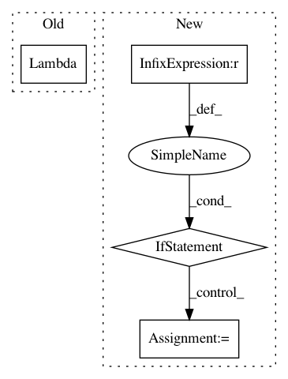

37d8d41a0b738fb8a4b9519a6d358c4f7e815382,keras_retinanet/models/retinanet.py,,retinanet_bbox,#Any#Any#Any#Any#,192
Before Change
model = retinanet(inputs=inputs, num_classes=num_classes, *args, **kwargs)
predictions, anchors = model.outputs
regression = keras.layers.Lambda(lambda x: x[:, :, :4], name="regression")(predictions)
classification = keras.layers.Lambda(lambda x: x[:, :, 4:4 + num_classes], name="classification")(predictions)
other = keras.layers.Lambda(lambda x: x[:, :, 4 + num_classes:])(predictions)
// apply predicted regression to anchors
After Change
anchors = model.outputs[0]
regression = model.outputs[1]
classification = model.outputs[2]
if len(model.outputs) > 3:
other = keras.layers.Concatenate(axis=2, name="other")(model.outputs[2:])
else:
other = None
// apply predicted regression to anchors
boxes = keras_retinanet.layers.RegressBoxes(name="boxes")([anchors, regression])
detections = keras.layers.Concatenate(axis=2)([boxes, classification] + ([other,] if other is not None else []))
// additionally apply non maximum suppression
In pattern: SUPERPATTERN
Frequency: 3
Non-data size: 4
Instances
Project Name: fizyr/keras-retinanet
Commit Name: 37d8d41a0b738fb8a4b9519a6d358c4f7e815382
Time: 2017-11-08
Author: hansg91@gmail.com
File Name: keras_retinanet/models/retinanet.py
Class Name:
Method Name: retinanet_bbox
Project Name: stellargraph/stellargraph
Commit Name: ce597a0b10658043b6d6d8ffed3fff4a6ebbc1ea
Time: 2019-09-26
Author: u5824685@anu.edu.au
File Name: stellargraph/layer/appnp.py
Class Name: APPNP
Method Name: __init__
Project Name: mathics/Mathics
Commit Name: 3159e4b8f5d863b87efa0f750ced348182adb1db
Time: 2020-09-07
Author: rb@dustyfeet.com
File Name: mathics/builtin/numpy_utils/with_numpy.py
Class Name:
Method Name: _create_ast_lambda